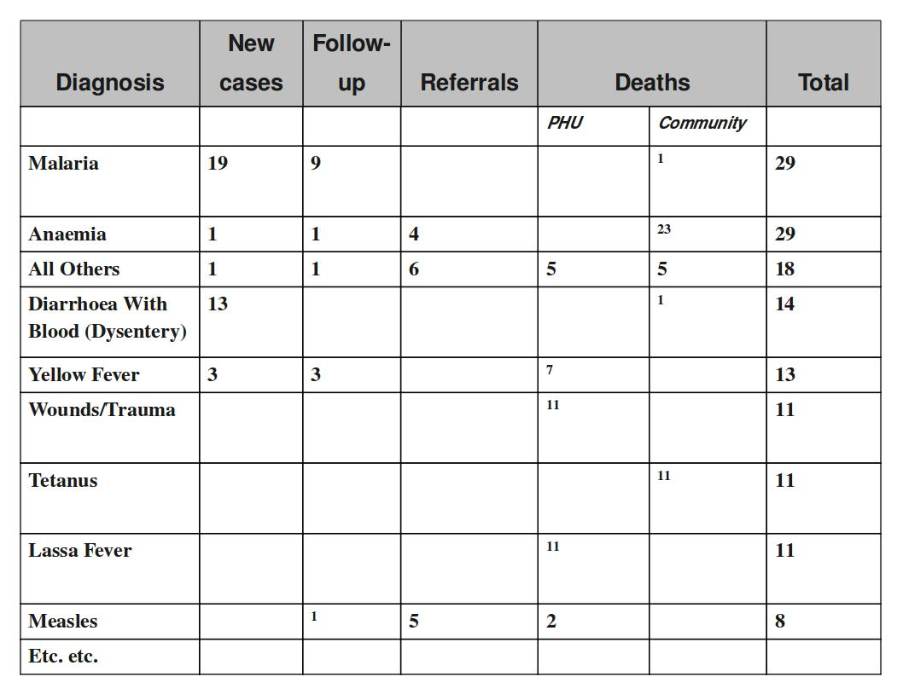

The table below combines data element the two group sets Diagnosis (all the diseases) and Morbidity/Mortality (New cases, Follow-ups, Referrals, Deaths) with the data element category PHU/Community. Deaths are captured in a separate form with other dimensions (e.g. the PHU/Community) than morbidity.
|  |
This output table combines the two data element categories HIV_Age and Gender with the data element group set ART Group. The group enables subtotals for staging and entry points summing up the data elements in that group. Subtotals for either age groups and gender would be other possible columns to easily include here.
 |